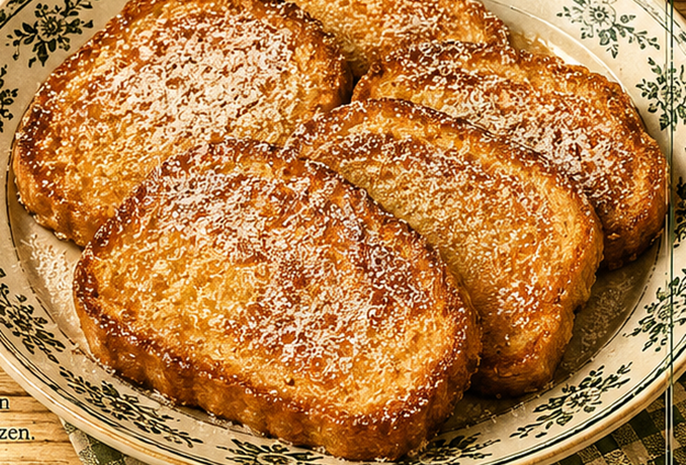

Weckschnitte
Süße, in Eiermilch gewendete und goldbraun gebackene Scheiben von altbackenen Wecken.

Originale Überlieferung
Altbackene Wecken werden in Scheiben geschnitten. Mehl, Eier, Milch, Zucker, Zimt und Zitronenschale werden zu einem Teig verrührt. Die Schnitten werden darin gewendet und in Fett ausgebacken.
Moderne Übertragung
Die Brotscheiben werden kurz in aromatischer Eiermilch eingeweicht und anschließend in der Pfanne goldbraun gebraten.
Zutaten
- 4 altbackene Brötchen
- 3 EL Mehl
- 3 Eier
- etwa 250 ml Milch
- 1 Päckchen Vanillezucker
- 1 Prise Zimt
- abgeriebene Zitronenschale
- Fett zum Ausbacken
- Zucker zum Bestreuen
Zubereitung
- Brötchen in etwa 2 cm dicke Scheiben schneiden.
- Mehl, Eier, Milch, Vanillezucker, Zimt und Zitronenschale glatt verrühren.
- Die Brotscheiben kurz in der Eiermilch wenden, ohne sie zerfallen zu lassen.
- Fett in einer Pfanne erhitzen und die Schnitten von beiden Seiten goldbraun braten.
- Mit Zucker bestreuen und warm servieren.